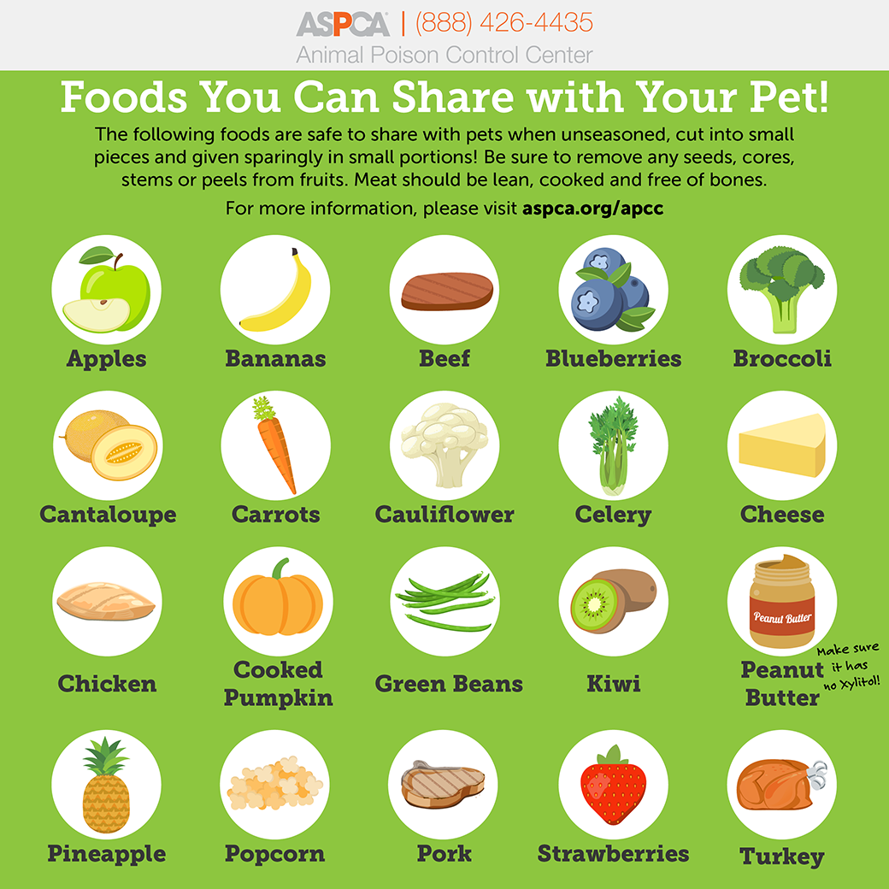
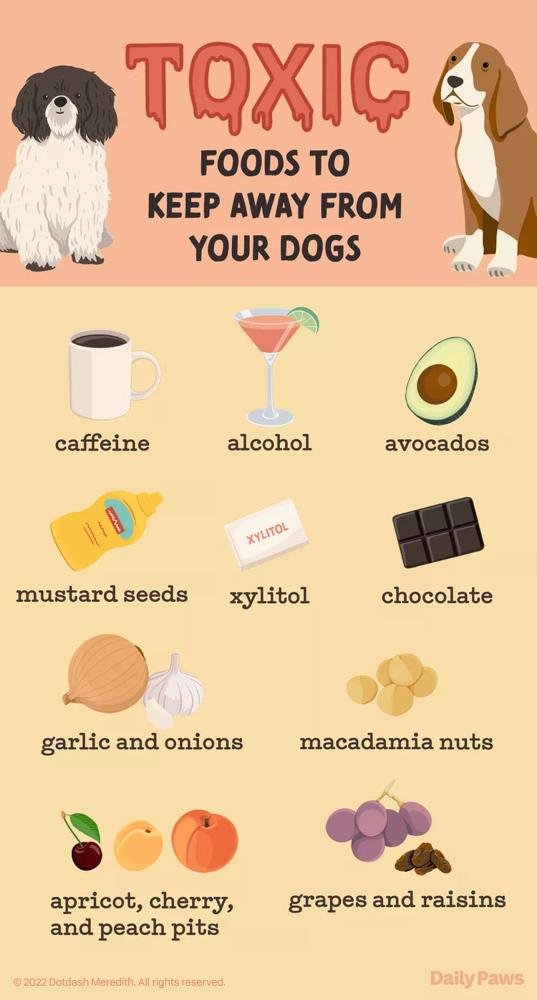

Can my dog eat...?
A guide on what you can and cannot feed your dog.
 
Check out these resources for more information:
https://evcc.com/blog/10-human-foods-dogs-can-eat/
https://www.akc.org/expert-advice/nutrition/human-foods-dogs-can-and-cant-eat/
https://www.medicalnewstoday.com/articles/324453/a>
https://www.aspca.org/pet-care/animal-poison-control/people-foods-avoid-feeding-your-pets
https://www.battersea.org.uk/pet-advice/dog-care-advice/toxic-food-dogs
https://www.petsbest.com/blog/20-foods-dogs-shouldnt-eat